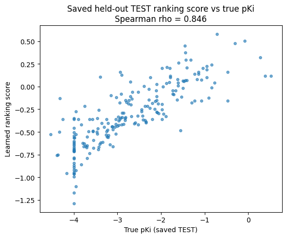

Project Overview
This project explores AI-driven in-silico methods for identifying promising drug candidates related to opioid receptor activity. Rather than using a purely generative approach to create entirely new molecules, we frame the task as a recommendation problem.
The goal is to begin with a set of potentially useful drugs, including FDA-approved drugs and compounds from similar drug databases, and use our model to help recommend which candidates are best suited for further investigation as safer or more effective opioid-related substitutes.
Recommendation Framing
In a generative drug-discovery pipeline, the model attempts to design new molecules from scratch. Our approach instead asks: given a list of existing or candidate molecules, which ones appear most promising for the desired biological task?
This framing is useful for drug repurposing because existing drugs may already have known safety profiles, pharmacological data, or regulatory histories. In this project, we focus on opioid-related compounds and investigate whether existing drugs can be ranked or embedded in a way that highlights candidates with desirable binding behavior.
Ki, pKi, and Binding Affinity
Ki, or inhibition constant, is a measure of how strongly a molecule binds to a biological target. In general, a lower Ki value indicates stronger binding because less of the compound is needed to inhibit or bind the target.
Because Ki values can span several orders of magnitude, it is common to transform Ki into pKi using a negative logarithm. This makes the values easier to compare and places large affinity differences onto a more manageable numerical scale.
In this project, higher pKi values correspond to stronger binding affinity, while lower pKi values correspond to weaker binding. Our model uses pKi as the ranking target: molecules with stronger measured affinity should receive higher learned ranking scores than molecules with weaker measured affinity.
Model and Loss Function
Our model is based on a variational autoencoder architecture with an additional affinity-ranking head. The encoder maps molecular feature vectors into a lower-dimensional latent representation, while the decoder encourages the latent space to preserve information needed to reconstruct the original molecular feature input.
The total loss combines three major terms: reconstruction loss, KL divergence loss, and a weighted pairwise hinge-ranking loss. These terms work together so that the model learns a latent space that preserves molecular information while also organizing molecules according to binding affinity.
Reconstruction Loss
The reconstruction loss encourages the decoder to rebuild the original molecular feature vector from the latent representation. This prevents the latent space from becoming useful only for ranking and helps preserve broader molecular descriptor information.
KL Divergence Loss
The KL divergence term regularizes the latent space so that encoded molecules follow a smoother and structured distribution. This is a standard part of variational autoencoders and helps prevent the latent space from becoming irregular or overly memorized.
Weighted Pairwise Hinge-Ranking Loss
The ranking loss compares molecules in pairs. For a pair of molecules, if molecule A has a higher true pKi than molecule B, then the model is encouraged to assign molecule A a higher learned affinity score than molecule B.
This loss is margin-based. It does not merely ask the model to rank the stronger binder slightly above the weaker binder; it asks the stronger binder to exceed the weaker binder by at least a fixed margin. In our current experiments, this margin is set to 0.25 score units.
The hinge loss only penalizes pairs that violate the desired ordering or fail to satisfy the margin. Once a pair is correctly ordered with enough separation, that pair contributes no additional ranking penalty.
The loss also ignores near-ties in pKi. If two molecules have nearly identical measured affinity, the model is not forced to learn a potentially noisy or biologically insignificant ordering between them.
Finally, the loss weights each pair by the magnitude of the pKi difference. A pair with a large affinity gap, such as a very strong binder compared against a very weak binder, contributes more strongly than a pair with only a small affinity difference.
In other words, the model is not only trying to separate molecules by binding affinity. It is also trying to preserve broader molecular structure and drug-property information through reconstruction and latent-space regularization.
Latent Space Organization and Affinity Separation
One of the primary goals of our model is not only to reconstruct molecular descriptors, but also to organize molecules in a latent representation that reflects biologically meaningful binding behavior.
To evaluate this, we compared dimensionality-reduction visualizations generated directly from the raw molecular descriptor space against visualizations generated from the model's learned latent space.
We measured how well strong binders and weak binders separate by training a simple logistic classifier on the projected coordinates and computing the Area Under the Receiver Operating Characteristic Curve (AUC).
| Representation | 2D UMAP AUC | 2D t-SNE AUC | 3D UMAP AUC | 3D t-SNE AUC |
|---|---|---|---|---|
| Raw Molecular Features | 0.8506 | 0.7873 | 0.8239 | 0.7822 |
| Learned Latent Representation | 0.9822 | 0.9929 | 0.9918 | 0.9932 |
These results indicate that the learned latent representation provides substantially better separation between high-affinity and low-affinity molecules than the original descriptor space across both 2D and 3D visualizations.
Ranking Score vs. Experimental Affinity
We also evaluated the relationship between the model's learned ranking score and experimentally measured binding affinity on a held-out test set.
A strong positive relationship indicates that molecules assigned higher ranking scores by the model also tend to exhibit stronger experimental binding affinity. The model achieved a Spearman rank correlation of ρ = 0.8457, demonstrating strong agreement between the learned ranking and the true affinity ordering of molecules.

Figure: Learned ranking score versus experimentally measured pKi on the held-out test set (Spearman ρ = 0.8457).
Visualization Interpretation
Raw Feature Space vs. Latent Space
The raw feature plots show UMAP and t-SNE applied directly to the original molecular descriptor features. These plots represent the structure of the data before it has passed through the learned model.
The latent-space plots show UMAP and t-SNE applied to the model’s learned latent representation. These plots help us evaluate whether the model reorganizes molecules into a space that better reflects affinity and other learned molecular relationships.
UMAP vs. t-SNE
UMAP and t-SNE are dimensionality-reduction methods used to visualize high-dimensional data in 2D or 3D. UMAP often emphasizes broader neighborhood structure, while t-SNE often emphasizes local clusters.
True pKi
pKi is derived from Ki, where higher pKi generally indicates stronger binding affinity. In the plots colored by true pKi, higher-value regions represent molecules with stronger measured binding affinity, while lower pKi regions represent weaker binders.
Affinity Groups
Some visualizations divide molecules into three groups based on their measured affinity:
- Strong binders — top 25% of pKi values
- Middle 50% — intermediate pKi values
- Weak binders — bottom 25% of pKi values
Interactive 2D & 3D Visualizations
These plots compare molecule embeddings from raw feature data and learned latent-space representations. Each plot defaults to the 3D version, with an option to switch to the corresponding 2D projection.
Raw Feature Space UMAP: True pKi
UMAP applied directly to raw Orexin1 descriptor features.
Raw Feature Space t-SNE: True pKi
t-SNE applied directly to raw Orexin1 descriptor features.
Latent Space UMAP: Affinity Groups
UMAP projection of the learned latent space grouped by true pKi: weak binders, middle 50%, and strong binders. UMAP_MIN_DIST = 0.1, UMAP_N_NEIGHBORS = 200